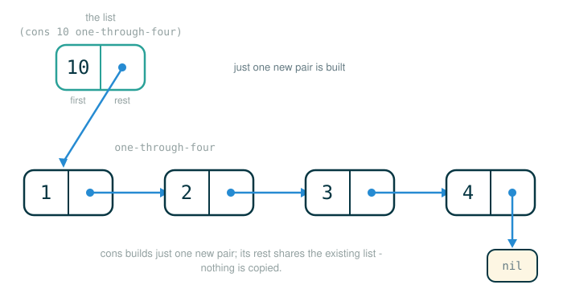

3.2 Pairs, Lists, and Recursive Sequence Processing
So far Scheme has computed with single values: numbers, booleans, the result of a procedure call. This lesson is about gluing values together. By the end of it you will be able to do four things: build a two-part compound value with cons, pull either part back out with car and cdr, recognize that a Scheme list is just a chain of those two-part values ending in nil, and write recursive procedures that walk such a list one element at a time.
Everything here rests on one small idea: a single container that holds exactly two things. Once that container is solid, lists stop being mysterious, because a list is nothing more than that container used over and over.
Two Connected Boxes
Think about a chain of train cars. Each car has two couplers: one holds a piece of cargo, and the other latches onto the next car. Latch enough cars together and you have a whole train, but the only thing you ever built was one car with two attachment points.
Scheme's basic glue works the same way. It gives you one container with exactly two slots. The left slot holds a value. The right slot holds whatever comes next. That container is called a pair, and you build it with the built-in procedure cons.
;; build a pair whose first part is 1 and whose second part is 2
(cons 1 2)A pair holds its two parts side by side:
+---+---+
| 1 | 2 |
+---+---+The left slot is the first part. The right slot is the rest part. That naming will matter the moment we start building lists, because the rest slot is exactly where the next train car latches on.
Follow the Line: Building a Pair
Read (cons 1 2) one token at a time. Each branch row below annotates one token of the line, and the final row gives the value the whole line produces.
(cons 1 2)
├─ ( ........... begins a call expression
├─ cons ........ the pair constructor
├─ 1 ........... the value for the first part
├─ 2 ........... the value for the second part
├─ ) ........... ends the call
└─ evaluates to a pair whose parts are 1 and 2Scheme prints that pair using dotted-pair notation, with a dot between the two parts:
(1 . 2)The dot is your signal that you are looking at a raw pair whose second part is an ordinary value, not the start of a longer list. Hold onto that detail; it is the difference between a lone pair and a list, and beginners mix the two up constantly.
Selecting Parts of a Pair
A constructor that you cannot take apart is useless. Scheme gives you two selector procedures, one for each slot.
carreturns the first part.cdrreturns the rest part.
The names are historical, inherited from the hardware of the first Lisp machines, and they are not going to change. For now lean on a plain memory hook:
car -> first part
cdr -> rest partHere are the two selectors applied to a freshly built pair.
;; select the first part
(car (cons 1 2));; select the rest part
(cdr (cons 1 2))The first call produces 1; the second produces 2.
Follow the Line: A Selector on a Constructed Pair
The trickier reading skill is a selector wrapped around a constructor, because two things happen on one line. Walk the tokens of (car (cons 1 2)).
(car (cons 1 2))
├─ ( ............... begins the outer call
├─ car ............. the selector for the first part
├─ (cons 1 2) ...... the operand: a call that builds the pair (1 . 2)
├─ ) ............... ends the outer call
└─ evaluates to 1The inner parentheses are not decoration. They tell Scheme that the entire pair-building expression (cons 1 2) is the single argument handed to car. Scheme evaluates that inner call first, producing the pair (1 . 2), and only then does car reach in and lift out the first part. Reverse the order in your head and the line stops making sense, so always evaluate the inside before the outside.
▶The Source Pair Checkpoint
The original text introduces pairs by binding one to a name and then inspecting it. We reproduce that exact sequence, because reading Scheme's printed pair and list output is a skill the original deliberately drills.
(define x (cons 1 2))
x
(car x)
(cdr x)After the definition runs, the environment holds one binding:
Global frame
x -> (1 . 2)Evaluating the name x by itself prints the whole pair, (1 . 2). Then (car x) evaluates to 1, and (cdr x) evaluates to 2. Nothing was changed by selecting; x still names the same pair after both selections. An interactive session looks like this:
scm> (define x (cons 1 2))
x
scm> x
(1 . 2)
scm> (car x)
1
scm> (cdr x)
2The first response line, the bare x, is the interpreter echoing the name it just bound. The lines with no prompt below each later expression are the values Scheme printed.
Lists as Chains of Pairs
Here is where the train-car picture pays off. A Scheme list is a chain of pairs in which each pair's rest part points to the next pair, and the very last rest part points at a special empty-list marker. That marker is written nil, and it can also be written as '() (the leading quote mark is explained when we reach quotation; this lesson always uses nil).
;; the empty list
nilnil is the train with no cars: the place where the chain stops. Every list you build eventually ends in it.
Build a one-element list by putting nil in the rest slot, which says "after this one value, nothing follows."
;; a one-element list
(cons 1 nil)+---+-----+
| 1 | nil |
+---+-----+To get more elements, nest the calls so each pair's rest slot holds the next pair. The original text builds a four-element list this way, laid out across several lines so the nesting is visible:
(cons 1
(cons 2
(cons 3
(cons 4 nil))))Read it from the inside out. (cons 4 nil) is the list containing just 4. Wrapping it in (cons 3 ...) produces the list 3, 4. Wrapping that in (cons 2 ...) produces 2, 3, 4. The outermost (cons 1 ...) produces the full list 1, 2, 3, 4. As a chain of boxes:
+---+---+ +---+---+ +---+---+ +---+-----+
| 1 | --+--> | 2 | --+--> | 3 | --+--> | 4 | nil |
+---+---+ +---+---+ +---+---+ +---+-----+The first box holds 1; its rest points to the list 2, 3, 4. That list's first box holds 2; its rest points to 3, 4. And so on, until the final box's rest is nil. Notice there is no dot in the printed form of a proper list. Scheme prints this chain as (1 2 3 4), reserving the dot for a pair whose rest is not itself a list.
The List Procedure
Writing four nested cons calls to build a four-element list is fine for understanding the structure, but nobody wants to type that every time. Scheme provides list, which takes any number of arguments and builds the same pair chain for you.
(list 1 2 3 4)This evaluates to the list (1 2 3 4), identical to the nested cons version above. list is convenience, not a new kind of data: under the surface it is still pairs all the way down, ending in nil.
The original text binds this list to a name so it can be reused.
(define one-through-four (list 1 2 3 4))After the definition, the environment holds:
Global frame
one-through-four -> (1 2 3 4)Follow the Line: Building a Named List
Walk the definition (define one-through-four (list 1 2 3 4)) token by token. A define line performs an action rather than producing a value, so the final row names the action instead of saying "evaluates to."
(define one-through-four (list 1 2 3 4))
├─ ( ........................ begins the define special form
├─ define ................... marks this as a definition, not a call
├─ one-through-four ......... the name to bind
├─ (list 1 2 3 4) ........... the value expression: builds the list (1 2 3 4)
├─ ) ........................ ends the definition
└─ binds one-through-four to the list (1 2 3 4)Taking a List Apart
Once a list has a name, the same two selectors inspect it. The car of a list is its first element. The cdr of a list is the rest of the list, which is itself a list.
(car one-through-four)
(cdr one-through-four)
(car (cdr one-through-four))(car one-through-four) evaluates to 1. (cdr one-through-four) evaluates to the list (2 3 4). And (car (cdr one-through-four)) reaches into that rest and pulls out its first element, 2. The third line is worth tracing, because chaining car and cdr is how you reach any element you want:
(cdr one-through-four) -> (2 3 4)
(car (2 3 4)) -> 2A full session reads:
scm> (car one-through-four)
1
scm> (cdr one-through-four)
(2 3 4)
scm> (car (cdr one-through-four))
2Notice the difference in what comes back. (car one-through-four) returns a bare number, 1. (cdr one-through-four) returns a list, (2 3 4), printed with parentheses and no dot, because the rest of a proper list is always another proper list.
Adding to the Front of a List
Because the rest slot of a pair can point at an existing list, cons is also the natural way to put a new element on the front of a list. You give cons the new first element and the existing list as its rest.
The figure below shows cons building one new pair whose rest slot points straight at the existing list, so nothing in the original chain is copied.

(cons 10 one-through-four)
(cons 5 one-through-four)(cons 10 one-through-four) evaluates to (10 1 2 3 4), and (cons 5 one-through-four) evaluates to (5 1 2 3 4).
scm> (cons 10 one-through-four)
(10 1 2 3 4)
scm> (cons 5 one-through-four)
(5 1 2 3 4)Here is the crucial functional-programming point. Neither call disturbs one-through-four. Each cons builds a brand-new front pair whose rest slot points at the original, unchanged list. You can keep cons-ing new fronts forever and the original four-element list keeps sitting there intact. Construction is not modification.
The Recursive Shape of a List
Look again at the box chain and notice something that makes lists special. The rest of a non-empty list is itself a list. A list is therefore defined in terms of a smaller list, which is the textbook definition of a recursive structure.
That self-similar shape suggests a standard plan for any procedure that processes a list:
If the list is empty:
return the base answer.
Otherwise:
use the first element (its car)
recursively process the rest (its cdr)
combine the two results.The predicate null? is what tests the empty case: (null? items) is true exactly when items is the empty list. Every recursive list procedure that follows uses null? (or a numeric check) to know when to stop and the car/cdr pair to take one step. This is the same recursion you used on Python sequences and linked lists in earlier chapters, now expressed in Scheme.
Computing Length
The original text defines a length procedure that counts the elements of a list.
(define (length items)
(if (null? items)
0
(+ 1 (length (cdr items)))))The base case comes first: an empty list has length 0. The recursive case counts the first element as 1 and adds the length of the rest. Because the rest is a shorter list, each recursive call shrinks the problem until it reaches nil.
Trace (length one-through-four). Each line peels one element off the front and asks for the length of what remains:
(length (1 2 3 4)) -> 1 + (length (2 3 4))
(length (2 3 4)) -> 1 + (length (3 4))
(length (3 4)) -> 1 + (length (4))
(length (4)) -> 1 + (length ())
(length ()) -> 0Now unwind from the bottom, substituting each returned value back into the call above it:
So (length one-through-four) evaluates to 4.
Getting an Item by Index
The original text also defines getitem, which returns the element at a numeric position, counting from 0.
(define (getitem items n)
(if (= n 0)
(car items)
(getitem (cdr items) (- n 1))))Index 0 means "the front element," so the base case returns (car items). When n is not 0, the element you want is not at the front, so the procedure walks one step into the rest with (cdr items) and decreases the index with (- n 1). Each step moves one pair deeper while the index counts down toward 0. When the two meet, you are sitting on the element you asked for.
Trace (getitem one-through-four 2):
(getitem (1 2 3 4) 2)
(getitem (2 3 4) 1)
(getitem (3 4) 0)
(car (3 4)) -> 3So (getitem one-through-four 2) evaluates to 3, the third element of the list.
Mapping Over a List
The two procedures above reduce a list to a single answer. Often you instead want a new list, with each element transformed. A natural example squares every element. The original text uses a squares procedure for exactly this.
(define (squares s)
(if (null? s)
nil
(cons (* (car s) (car s))
(squares (cdr s)))))Same recursive skeleton, but the combine step is different. The base case returns nil, the empty list, because squaring nothing yields nothing. The recursive case squares the first element with (* (car s) (car s)), recursively squares the rest with (squares (cdr s)), and then conses the squared first element onto the front of the squared rest. The result is a fresh list of squares.
Applied to our running example:
(squares one-through-four)This evaluates to:
(1 4 9 16)Read the construction from the recursion's base outward. The deepest call returns nil. Then 4 squared, 16, is consed on, giving (16). Then 3 squared, 9, gives (9 16). Then 2 squared gives (4 9 16). Finally 1 squared gives (1 4 9 16). Crucially, squares never touches one-through-four; it builds an entirely new list, which is the functional style at work.
▶The Source List Checkpoint
The original text closes this material with a short interactive sequence that reuses the recursive utilities on a concrete five-element list. It binds the name squares to a literal list of square numbers.
(define squares (list 1 4 9 16 25))
(length squares)
(getitem squares 3)One thing to flag honestly: this squares is a list, while the squares defined earlier was a procedure. In a real session, reusing the same name simply replaces the earlier binding, and a name always refers to its most recent binding. The original transcript reuses the name, so we keep it, and it doubles as a reminder that names in an environment can be rebound.
(length squares) walks all five elements and evaluates to 5. (getitem squares 3) asks for index 3, the fourth element, and evaluates to 16.
scm> (define squares (list 1 4 9 16 25))
squares
scm> (length squares)
5
scm> (getitem squares 3)
16The list in play is:
(1 4 9 16 25)⚠Common Beginner Traps
Trap 1: Reading (1 . 2) and (1 2) as the same thing. The dot means a raw pair whose rest is an ordinary value. No dot, with parentheses, means a proper list whose rest is another list. (cons 1 2) prints (1 . 2); (cons 1 nil) prints (1). The difference is whether the rest slot ends in nil.
Trap 2: Thinking cdr returns one value. For a proper list, cdr returns the entire rest of the list, not just the second element. (cdr one-through-four) is the list (2 3 4), not the number 2. To get the second element you take the car of the cdr.
Trap 3: Forgetting the empty-list base case. Every recursive list procedure must stop when the list runs out. If length or squares never checked null?, the recursion on (cdr s) would run off the end of the list and eventually call cdr on the empty list, which raises an error rather than returning a result. The base case is not optional.
Trap 4: Believing cons changes the original list. cons builds a new front pair whose rest points at the existing list. The original list is untouched. (cons 10 one-through-four) does not make one-through-four longer.
Trap 5: Treating list as a different kind of data from cons. list is shorthand. (list 1 2 3 4) produces exactly the same pair chain as four nested cons calls ending in nil. There is only one underlying structure here.
✓Check Your Understanding
- What are the two parts of
(cons 1 2), and how does Scheme print that pair? - What does
(car (cons 1 2))produce, and why must Scheme evaluate the inner(cons 1 2)first? - What does
(cdr one-through-four)evaluate to, and is it a number or a list? - What does
(getitem (cdr one-through-four) 0)evaluate to? - In
getitem, why does the recursive call use(- n 1)? - After evaluating
(cons 10 one-through-four), what isone-through-four?
Show the answers
- The first part is
1and the second part is2. Scheme prints it in dotted-pair notation as(1 . 2), because the rest part is an ordinary value rather than a list. - It produces
1, the first part of the pair. Scheme must build the pair beforecarhas anything to select from, so the inner(cons 1 2)is evaluated to the pair(1 . 2)first, and thencarlifts out its first part. - It evaluates to the list
(2 3 4). It is a list, not a number, because the rest of a proper list is always another proper list. - It evaluates to
2.(cdr one-through-four)is the list(2 3 4), andgetitemwith index0returns thecarof that list, which is2. - After moving from the current pair into the rest of the list with
(cdr items), the element you want is now one position closer to the front, so the target index shrinks by one to match. - It is still the list
(1 2 3 4).consbuilds a new pair on the front and leaves the original list unchanged.
§Summary
A Scheme pair is a single container with two slots, built by cons and taken apart by car (first part) and cdr (rest part). A list is a chain of pairs whose final rest slot is nil, and Scheme prints a proper list with parentheses and no dot, reserving the dot for a lone pair whose rest is an ordinary value. Because the rest of a non-empty list is itself a list, lists are recursive, and list procedures follow one recurring plan: handle the empty list as the base case, use the car of the first element, recurse on the cdr, and combine. length and getitem reduce a list to a single answer; squares builds a brand-new list without disturbing the original, which is the functional style in miniature.
▶Step-Through Checkpoint
Scheme cannot be stepped line by line here, so this checkpoint uses a small Python model of the same first/rest chain. The block below is a model of the Scheme idea, not the real Scheme implementation: it represents a pair as a two-element Python tuple, nil as None, and reuses the names from this lesson. Stepping through it draws the environment diagram alongside the heap: one_through_four binds to a nested chain of tuple objects ending in None, and you can watch each length and getitem frame follow cdr one tuple deeper into that structure before unwinding. Before you step through it, write down three predictions:
- what value the global frame ends up binding to
one_through_four; - whether
cons,car, andcdreach open frames of their own as the program runs; - whether any
getitemframe changes the value the deepest call returns on its way back up.
# (1)
nil = None
def cons(first, rest):
return (first, rest)
def car(pair):
return pair[0]
def cdr(pair):
return pair[1]
def length(items):
if items is nil:
return 0
return 1 + length(cdr(items))
def getitem(items, n):
if n == 0:
return car(items)
return getitem(cdr(items), n - 1)
one_through_four = cons(1, cons(2, cons(3, cons(4, nil))))
print(length(one_through_four))
print(getitem(one_through_four, 2))
Step through it one line at a time and check each prediction as the frames appear. The global frame binds one_through_four to (1, (2, (3, (4, None)))), with None closing the chain, and building it costs four cons frames, one per pair. In real Scheme these three are primitives, but in this model they are ordinary functions, so car and cdr also earn a frame every time length and getitem call them. The first print shows 4, assembled as each enclosing length frame adds 1 to the 0 returned at the empty-list base. Then three getitem frames open, each one pair deeper as the index counts down to 0, where car finally returns 3, and every getitem frame passes that 3 back up untouched. The detail to watch is not the tuple syntax but the shrinking call stack; that same shape is what the Scheme getitem does to (1 2 3 4).